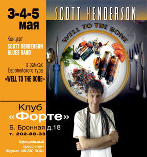

Хендерсон, конечно, очень крутой гитарист. У него в голове звучит какая-то крутая полифония, нетрадиционные гармонии и пр. В своих партиях он обыгрывает драйвовые темы и ритмы с применением усложненных гармоний, обязательно сочетающихся (иногда находящихся на грани, но с нужной стороны) с драйвом основной темы. (Хочется сказать: ну, прям, полтора Арсена Шомахова ;)))) Рассказывать тут особенно нечего, надо слушать, ибо дальнейшие подробности можно выразить только в чисто-музыкальных терминах. Все очень круто ;)
На басу играет Джон Хампфри. А самый клевый персонаж в группе - это ударник и вокалист по-совместительству - Кирк Ковингтон. Это большой, энергичный и уже немолодой человек (триста фунтов радости) с бородкой и острым взглядом. В перерыве убежал в почти полностью мокрой майке в бар, где получил огромную тарелку с бифштексом и жареной картошкой. Бифштекс понадобился для восстановления энергии, которую Кирк совершенно не экономил на концерте. Стучит он чрезвычайно четко, громко и уверенно, но при этом непрерывно ритмически импровизирует параллельно с гитаристом. По нему видно, что он - супер-опытный музыкант, и абсолютно точно знает и чуствует, что и когда надо играть. Все нужные доли он буквально заколачивает и забивает в тарелки и барабаны. Посередине первого отделения он даже сломал педаль... Какой классный барабанщик! При этом еще одновременно поет довольно высоким голосом. Все партии на последнем компакте пропел именно он. Супер-бизон! ;)
Группа исполняла совершенно разные композиции. Две или три из них являлись блюзом по музыкальной форме. Но, разумеется, и по-определению, блюзами "нетрадициенными". И во всех этих случаях эксперимент над любимой формой меня восхитил, ибо был очень интересным.
Я слышал только одну последнюю пластинку Хендерсона, она мне понравилась, однако это, грубо говоря, не самый интересный для меня стиль и т.д. Ибо, как и во многих других случаях, пластинка воспринимается и ценится как некоторое зафиксированное развитие музыки в определенном направлении. Если меня стиль фьюжн в целом не очень интересует, то пластинка меня, вероятно, сильно не заденет за живое (и актуальное). Однако, концерт - совершенно другое дело. На концерте я слушаю, как человек играет, как эмоции и страсти музыканта переплетаются с музыкальной формой...
Самое главное, что хочется сказать - концерт был совершенно забойным. Пожалуй, по-сути главное отличие того, что я слышал, от других форм фьюжн или же поп-музыки, и то, что делает музыку Хендерсона близкой блюзу и к року, состоит вот в чем: 3/4 песен построены на ритмическом напряжении, драйве, натяжении и неустойчивости. Дополнительная неустойчивость создается постоянными фривольными гармоническими переходами. При этом, нет никаких классических "достоинств" фьюжна: нечеткости, соплей, отсутствия какой-либо атаки в звукоизвлечении на жутко примоченном звуке, ничем не подкрепленной гармонической зауми, убивающей драйв. Концерт Хендерсона был забойнейшим рок-концертом, который пробирал каждого до костей спинного мозга. Ударник Кирк несколько раз шутил на тему того, что если публика пришла послушать джаззз, то она жестоко просчиталась. Он однозначно причисляет себя к героям - рок-музыкантам. ;)
(Я видел однажды на видео-кассете, как собирающийся исполнять бибоп трубач во вступлении объявил, что собирается играть бибоп, но не будет играть bossa-nova, latin, music of fusion or music of confusion.) Музыкального конфуза сегодня как раз не было и следа. Если бывает плохой фьюжн, то сегодня я слышал хороший!
Звук на концерте был лучшим за историю московских концертов, и ооочень громким, в очень хорошем смысле этого слова. Хендерсон играл в огромный Маршалл, в 2/3 человеческого роста, который сдувал ближе к сцене. При этом все было очень разборчиво, хотя громче, чем обычно, даже для Форте. Ударная установка, в которую заколачивал гвозди Кирк, буквально гудела... Закончился концерт на бис "аутентичным" ураганным исполнением Fire by Jimi Hendrix в большой маршаловский комбик...
Сегодняшний концерт меня пронял, очень понравился, и, наверное, отчасти открыл уши. Настолько качественной и сложной музыки я слышал на концертах не так уж много. Я провозглашаю: "Даешь живую утонченно-драйвовую музыку, стирающую границы музыкальных стилей! Ура! Спасибо Форте!".
Федор Романенко, 04.05.2003
P.S. Да простят меня - блюзмена любители за камни в огород фьюжн ;)